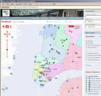

Many projects are using DWR on intranet sites, this generally means they're hard to find out about, and impossible to link to an check. It is possible to discover a small fraction of the commercial users by looking at the IP addresses that read the DWR DTD files.
From this we can tell that DWR has a large users which probably include Bank of America, Mastercard, Citigroup, Deutschebank, Permanent General, Dow Jones, RSA Security, Cap Gemini, The International Olympic Committee, IBM in the US, China and India, Caterpillar, 20th Century Fox, UCG, Lufthansa, Associated Press, Monsanto, Lawrence Livermore National Laboratories and the states of New York and Georgia. Many of these appear to be using DWR from multiple development sites.
It is estimated that something like 40,000 developers worldwide are actively using DWR, or at least editing DWR config files with an official DTD. Since many users will be configuring DWR using annotations, or be behind a firewall, this may be an under-estimate. The conversion between DTD hits and developers is estimated based on the hits that the DWR developers themselves make to the DTD.

The following is a small selection of some sites that are publicly available.
The results page uses DWR to fetch extra details on a flight.
For more information see Joe's blog entry.
Walmart are using DWR for their online store. It's not a total re-design around DWR, but one of the cool things about DWR has always been how well it has integrated with what you've already got.
Lots of the pages like this clothing page have links that use DWR. Keeping track of pages on the Walmart site is tricky because pages die when the products are no longer sold. So if you get the Walmart home-page it's because we need to update the linked product id.
For more information see this entry in Joe's blog.
The City of New York is using DWR for its city map.
Click for a larger version, or head on over to the site.
The site is designed for IE6 and there are some scrolling issues with Firefox, but I'm sure they will fix those soon.
Like Google Maps, there are the usual scroll/zoom features, but the New York mapping tool adds overlays for looking up zip codes and for landmarks, and allows you to pick the details that are shown or hidden.
For more information see this entry in Joe's blog.
Atlassian uses DWR in both JIRA (an issue tracking and project management application. See also a live demo, view source to see DWR) and Confluence v2 (an enterprise-level wiki). JIRA is installed in over 2500 sites worldwide.
DZone is a social news site along the lines of Digg, with a focus on developers. It's run by Rick Ross from the Java Lobby. DZone uses DWR to dynamically load new data on a number of pages. Read more in Joe's recent blog entry, or find out more about DZone.
InfoQ uses DWR in it's commenting system and to load side tabs amongst other things. Read more in Joe's recent blog entry, or find out more about InfoQ.
Pebble is a lightweight, open source, Java EE blogging tool, created by Simon Brown. It uses DWR in its commenting system. We use pebble to host Joe and Mark's blogs.